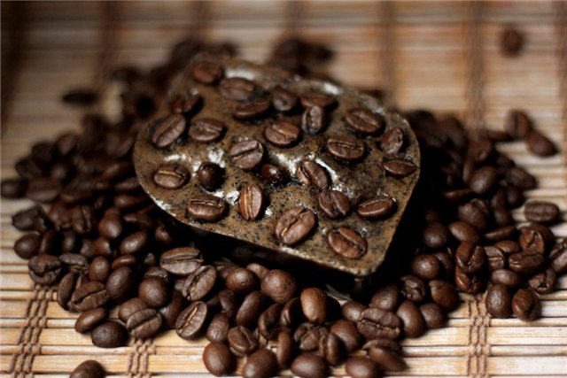

Мыло с кофейными зернами

Описание
Мечтаете об упругой, подтянутой коже? Ведете непрерывную борьбу с целлюлитом и растяжками? Тогда мыло «Бодрящий кофе» непременно должно стать участником ваших ежедневных косметических процедур. Ведь это одновременно натуральный скраб и увлажняющее средство, богатое витаминами и полиненасыщенными кислотами. Входящий в состав мыла антицеллюлитный комплекс питает, защищает и улучшает структуру кожного покрова. Начните свой день с «кофейного душа»!
Состав
- Уникальная мыльная основа Luxury Rebatch Base, USA – 150 грамм
- Антицеллюлитный комплекс «Кофе» – 1/2 чайной ложки/li>
- Краситель пищевой гелевый коричневый-2-3 капли
- Пищевой ароматизатор Капучино– 6-8 капель
- Форма нежность
- Молотый кофе – 1 чайная ложка
- Кофейные зерна
Рецепт
- Растопите основу на водяной бане до состояния, напоминающего картофельное пюре.
- Добавьте антицеллюлитный комплекс, краситель и молотый кофе. Тщательно перемешайте.
- Добавьте ароматизатор.
- Поместите на дно формы несколько кофейных зерен.
- Выложите основу в форму. Накройте пищевой пленкой и разровняйте поверхность.
- Украсьте мыло сверху кофейным зерном.
- Оставьте продукт застывать при комнатной температуре.
- После того, как мыло полностью застынет, выньте его из формы.
- Чудесный косметический продукт готов!